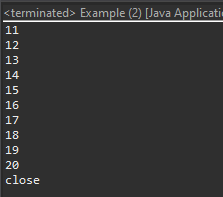
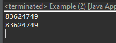
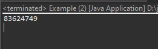
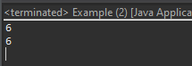
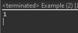

[Java] 36.コーディングする時、よく使うコーディングパターンとステップ数を減らす方法
こんにちは。明月です。
この投稿はJavaでコーディングする時、よく使うコーディングパターンとステップ数を減らす方法に関する説明です。
以前の投稿でJavaのコーディング規約に関して説明したことがあります。
link - [Java] 35. コーディング規約設定(Google Standard coding style)
プログラムのプロジェクトを設計する時にコーディング規約を守ることも重要ですが、どのプログラムを設計するか、どのデザインパターンを反映するか、ステップを減らすためのどのアルゴリズムを使うかを考えることになります。
デザインパターンやアルゴリズムに関しては別の投稿で説明します。ここの投稿ではデザインパターンよりは簡単なパターンやアルゴリズムの作成方法に関して説明しようと思います。
クラスを作成する時にインタフェース、抽象クラスを活用しよう。
Javaには一般インタフェースと違い、特殊な文法を使えるようなインタフェースがあります。
例えば、RunnableとCallableのインタフェースはラムダ式を使えるし、Clonableインタフェースはクラスのメモリコピーができます。Closeableのインタフェースはtry~catchで自動close関数を呼ばれる式を作れます。
Throwableの場合は例外処理クラスを生成するし、Serializableの場合は直列化(シリアライズ)ができるインタフェースです。
import java.io.Closeable;
import java.io.Serializable;
import java.util.concurrent.Executors;
// データタイプの抽象クラスだ。CloneableインタフェースとSerializableインタフェースを継承
abstract class Data implements Cloneable, Serializable {
// Serializableインタフェースのシリアライズのシリアルキー
private static final long serialVersionUID = 1L;
// Cloneableインタフェースを通ってクラスのメモリコピーができる。
@Override
public Data clone() {
// クラスのメモリコピー
return (Data) this.clone();
}
// 抽象メソッド
public abstract void add() throws PrintingException;
}
// 処理タイプの抽象クラスだ。RunnableインタフェースとCloseableインタフェースを継承
abstract class Process implements Runnable, Closeable {
// Closeableインタフェースを通ってclose関数を再宣言しなければならない。
@Override
public void close() {
System.out.println("close");
}
}
// 例外処理クラスだ、Throwableインタフェースを継承
class PrintingException extends Throwable {
// Serializableインタフェースのシリアライズのシリアルキー (ThrowableインタフェースがSerializableを継承している。)
private static final long serialVersionUID = 1L;
// コンストラクタ
public PrintingException() {
super("PrintingException");
}
}
// データタイプクラスだ。 Dataの抽象クラスを継承
class Entity extends Data {
// Serializableインタフェースのシリアライズのシリアルキー
private static final long serialVersionUID = 1L;
// メンバー変数
private int data;
// dataメンバー変数のgetter
public int getData() {
return data;
}
// dataメンバー変数のsetter
public void setData(int data) {
this.data = data;
}
// Data抽象クラスのaddを再定義
@Override
public void add() throws PrintingException {
if (this.data > 50) {
throw new PrintingException();
}
this.data++;
}
}
// 処理タイプクラスだ。 Processの抽象クラスを継承
class PrintingProcess extends Process {
// メンバー変数
private Entity entity;
// entityメンバー変数のgetter
public Entity getEntity() {
return entity;
}
// entityメンバー変数のsetter
public void setEntity(Entity entity) {
this.entity = entity;
}
// Runnableインタフェースのrun関数の再定義
@Override
public void run() {
// 0から9までの繰り返し
for (int i = 0; i < 10; i++) {
try {
// transEntity関数を呼び出す。
transEntity(entity);
// コンソール出力
System.out.println(entity.getData());
} catch (Throwable e) {
// 例外処理コンソール出力
e.printStackTrace();
}
}
}
// インタフェースdataを受け取ってadd関数を呼び出す。
private void transEntity(Data entity) throws PrintingException {
entity.add();
}
}
public class Example {
// 実行関数
public static void main(String[] args) {
// tryステック領域が終わると自動にclose関数を呼び出す。
try (PrintingProcess process = new PrintingProcess()) {
// クラス宣言
Entity entity = new Entity();
// データ設定
entity.setData(10);
// 処理タイプのクラスにデータを入力
process.setEntity(entity);
// 処理タイプのクラスをスレッドに渡す。
Executors.newSingleThreadExecutor().submit(process).get();
} catch (Throwable e) {
// 例外処理コンソール出力
e.printStackTrace();
}
}
}

上の例はDataタイプの抽象クラスとProcessタイプの抽象クラスを作りました。
Dataタイプの抽象クラスはデータベースや色々のデータがあるEntityタイプのクラスだし、Processタイプの抽象クラスをそのデータを処理するControllerタイプのクラスです。
それでDataタイプのクラスはクラスのメモリコピーが可能なCloneableインタフェースと直列化(シリアライズ)ができるSerializableインタフェースを継承します。
Processタイプのクラスはスレッドで使えるRunnableインタフェースとclose関数が使えるCloseableインタフェースを継承します。
もちろん、クラスで直接にインタフェースを継承して作成することができますが、インタフェースとクラス間に抽象クラスを置いて、クラス側で共通部分と派生部分を分けて開発することができます。
分岐文はif~elseよりbreakとcontinueを使えましょう。
プログラムを作成する時に繰り返し文(for)で分岐(if~else)を置いてよく使えます。
if~else文が悪いことではなく、if~elseが多くなるとスタック深さ(depth)が多くなります。スタック深さ(depth)が多くなると可読性が悪くなるし、プログラム開発する時に迷い込む時があります。
できれば繰り返し文(for)にはif~breakやcontinueを使うことがスタック深さ(depth)を節約する方法になります。
public class Example {
// 実行関数
public static void main(String... args) {
int sum = 0;
// if~elseを使うとスタック深さ(depth)が多くなる。
// 繰り返し文(1 depth)
for (int i = 0; i < 1000; i++) {
// 偶数だけ(2 depth)
if (i % 2 == 0) {
// 繰り返し文(3 depth)
for (int j = i; j < 1000; j++) {
// 3の倍数(4 depth)
if (j % 3 == 0) {
// 足す。
sum += i + j;
// .....
}
}
// .....
}
}
// コンソール出力
System.out.println(sum);
sum = 0;
// 逆にcontinueを使うとスタック深さ(depth)を節約できる。
// 繰り返し文(1 depth)
for (int i = 0; i < 1000; i++) {
// 奇数ならcontinue
if (i % 2 != 0) {
continue;
}
// 繰り返し文(2 depth)
for (int j = i; j < 1000; j++) {
// 3の倍数ではなければcontinue
if (j % 3 != 0) {
continue;
}
// 足す。
sum += i + j;
}
// ...
}
// コンソール出力
System.out.println(sum);
}
}

上の例は上の場合はfor~if~for~ifまで4depthまで行きます。
でも下の場合はfor~forで2depthで処理します。つまり深さ(depth)が少なくなるので可読性がよくなります。
繰り返しは関数で置換
一つの関数で様々な処理を全部に作成することよりできれば細かく分けて作成する方が可読性やソース管理が良いです。
特に繰り返し文が重なっている場合は分ける方が良いです。
public class Example implements Runnable {
// 実行関数
public static void main(String... args) {
// インスタンス生成
Example test = new Example();
// run関数呼び出す。
test.run();
}
// メンバー変数
private int sum = 0;
// Runnableインタフェースのrun関数の再定義
@Override
public void run() {
// sumFirstLoop関数を呼び出す。
sumFirstLoop();
// コンソール出力
System.out.println(sum);
}
// 始めの繰り返し関数
private void sumFirstLoop() {
// 繰り返し文
for (int i = 0; i < 1000; i++) {
// 偶数ではなければcontinue
if (i % 2 != 0) {
continue;
}
// sumSecondLoop関数呼び出す。
sumSecondLoop(i);
}
}
// 二つ目の繰り返し関数
private void sumSecondLoop(int i) {
// 繰り返し文
for (int j = i; j < 1000; j++) {
// 3の倍数ではなければcontinue
if (j % 3 != 0) {
continue;
}
// 足す。
this.sum += i + j;
// ...
}
}
}

上の例は繰り返し部分だけ関数で分けました。
プログラムの性能改善には影響なしでただ可読性をよいことにします。この部分は人により差異があるので、自分の基準がある方が良いです。
メンバー変数はクラスの特性なので、メイン処理関数だけで使うし計算用のメソッドはパラメータでデータ値を受け取りましょう。
メンバー変数の場合はクラス内でどの関数でも参照ができます。でも、変数と関数が多くなるし複雑な処理するクラスの場合、あっちこっちでメンバー変数を参照して使うと後でデータ管理が難しくなります。なのでメイン関数(public)ではメンバー変数を使うし計算用関数(private)はパラメータでデータを扱うことです。
関数でパラメータが多くなるとインラインクラスを利用して使うこともできます。
public class Example implements Runnable {
// 実行関数
public static void main(String... args) {
// インスタンス生成
Example test = new Example();
// run関数呼び出す。
test.run();
}
// メンバー変数
private int sum = 0;
// Runnableインタフェースのrun関数の再定義
// メインメソッドにはメンバー変数を使う。
@Override
public void run() {
// sumFirstLoop関数を呼び出す。
sum = sumFirstLoop(sum);
// コンソール出力
System.out.println(sum);
}
// 始めの繰り返し関数
// 計算用関数はメンバー変数を直接に参照しなくてパラメータでデータを受け取る。
private int sumFirstLoop(int sum) {
// 繰り返し文
for (int i = 0; i < 1000; i++) {
// 偶数ではなければcontinue
if (i % 2 != 0) {
continue;
}
// sumSecondLoop関数呼び出す。
sum = sumSecondLoop(i, sum);
// ...
}
return sum;
}
// 二つ目の繰り返し関数
// 計算用関数はメンバー変数を直接に参照しなくてパラメータでデータを受け取る。
private int sumSecondLoop(int i, int sum) {
// 繰り返し
for (int j = i; j < 1000; j++) {
// 3の倍数ではなければcontinue
if (j % 3 != 0) {
continue;
}
// 足す。
sum += i + j;
// ...
}
return sum;
}
}
一つのラインで二つの処理以上は禁止
私の場合は三項演算子をよく使います。三項演算子が何かというとif~elseのことを「条件式?true式:false式」で作成できる文法です。
三項演算子は悪くないですが、重ねって作成すると可読性が悪くなります。
public class Example implements Runnable {
// 実行関数
public static void main(String... args) {
// インスタンス生成
Example test = new Example();
// run関数呼び出す。
test.run();
}
// Runnableインタフェースのrun関数の再定義
@Override
public void run() {
// 一つのラインで二つの処理以上は禁止
System.out.println(add1(add2(add3(0))));
// 分割
int temp = 0;
temp = add3(temp);
temp = add2(temp);
temp = add1(temp);
// コンソール出力
System.out.println(temp);
}
// 関数
private int add1(int data) {
return data + 1;
}
// 関数
private int add2(int data) {
return data + 2;
}
// 関数
private int add3(int data) {
return data + 3;
}
}

上の式でadd1(add2(add3(0)))に作成するとどの関数から始まることかも迷い込みますね。一番の奥のadd3関数から始まります。
ステップが増えることでパフォーマンスが悪くなることではないので、出来れば分けて作成する方が良いです。
参照リターンはパラメータに、データ変換は関数のリターン値に処理しよう。
参照ができるクラスタイプ(Pass by reference)はパラメータに渡してデータをリターンを受け取ると迷い込む時があります。別にこんなに処理しても問題はないですが、たまに変数名が変わると迷い込みますね。
可読性のためにもクラスはパラメータで受け取る方が良いです。
// テストクラス
class Node {
// メンバー変数
private int node;
// メンバー変数のgetter
public int getNode() {
return node;
}
// メンバー変数のsetter
public void setNode(int node) {
this.node = node;
}
}
public class Example implements Runnable {
// 実行関数
public static void main(String... args) {
// インスタンス生成
Example test = new Example();
// run関数呼び出す。
test.run();
}
// Runnableインタフェースのrun関数の再定義
@Override
public void run() {
// インスタンス生成
Node node = new Node();
// データ設定
node.setNode(0);
// 関数呼び出す。- nodeが0ならtrue、1ならfalse
if (trans(node)) {
// nodeがtrueならnodeの値は1になる。
// コンソール出力
System.out.println(node.getNode());
}
}
// 値のリターンタイプでクラスはパラメータ、データはリターンタイプで受け取る。
public boolean trans(Node node) {
// node値が0なら1に修正、0ではなければ修正しない。
if (node.getNode() == 0) {
// nodeクラスの値修正
node.setNode(1);
// リターン値はtrue
return true;
}
// リターン値はfalse
return false;
}
}

プログラム開発経歴が多い方は自分のスタイルのデザインパターンとコーディング技法があります。上で紹介したことはどこの規約や技法ではなく、私が今まで開発しながらこんなにすると設計が綺麗だし、バグが少なかったということを纏めてみました。
参照したらよいと思います。
ここまでJavaでコーディングする時、よく使うコーディングパターンとステップ数を減らす方法に関する説明でした。
ご不明なところや間違いところがあればコメントしてください。
- [Java] 43. Web Spring frameworkのviewで使うプログラム言語(JSTL) - 関数、データベース2019/10/08 07:43:33
- [Java] 42. Web Spring frameworkのviewで使うプログラム言語(JSTL) - コア―、フォーマット2019/10/07 07:38:13
- [Java] 41. Web Spring webframeworkのControllerからajaxの要請する時、jsonタイプのデータを返却する方法2019/10/04 19:24:43
- [Java] 40. Web Spring frameworkでControllerを扱う方法2019/10/03 20:02:06
- [Java] 39. Spring Web Frameworkを利用してウェブサービスプロジェクトを作成する方法2019/10/02 21:00:22
- [Java] 38. Javaでウェブサービスプロジェクト(JSP Servlet)を作成する方法2019/10/01 21:48:08
- [Java] 37.イクリプス(eclipse)でトムキャット(tomcat)を設定する方法2019/09/30 22:19:34
- [Java] 36.コーディングする時、よく使うコーディングパターンとステップ数を減らす方法2019/09/27 20:39:09
- [Java] 35. コーディング規約設定(Google Standard coding style)2019/09/26 21:31:25
- [Java] 34. WindowでMariaDBをインストールする方法2019/09/25 19:58:30
- [Java] 33. オープンライブラリを参照する方法(eclipseからmavenを連結)2019/09/24 19:35:54
- [Java] 32. Reflection機能を使う方法(Annotation編)2019/09/24 00:19:25
- [Java] 31. Reflection機能を使う方法(Variable編)2019/09/20 22:34:40
- [Java] 30. Reflection機能を使う方法(Method編)2019/09/19 20:20:10
- [Java] 29. Reflection機能を使う方法(Class編)2019/09/18 20:02:14
- [Java] 56. Web serviceのサーブレット(Servlet)で初期化作業(properties設定)2021/07/02 17:10:36
- [Java] 55. Spring frameworkに文字化けを解決する方法(Encoding設定)2021/06/30 16:37:16
- [Java] 54. Spring frameworkでWeb filterを使う方法2021/06/29 18:25:12
- [Java] 53. ウェブサービス(Web service)でエラーページを処理する方法2021/06/25 13:35:54
- [Design pattern] 1-3. ファクトリメソッドパターン(Factory method pattern)2021/06/23 19:45:37
- [Java] WebSocketでチャット履歴をローディングする方法2021/06/15 18:34:45
- [Java] WebSocketを利用してユーザ(サイト運用者)が他のユーザとチャットする方法2021/06/15 17:20:08
- [Design pattern] 1-2. ビルダーパターン(Builder pattern)2021/06/11 19:06:28
- [Design pattern] 1-1. シングルトンパターン(Singleton pattern)2021/06/09 19:40:05
- [Design Pattern] デザインパターンの紹介2021/06/08 20:42:36
- [Tools] Dbeaver(無料Sql queryブラウザツール)2021/04/28 18:26:49
- [Bootstrap] HTMLデザインのフレームワークのBootstrap紹介2020/07/30 19:06:36
- [Python] メール(smtplib)を送信する方法2020/07/27 18:38:43
- [Python] HttpConnection(requestsモジュール)でウェブサーバーで接続する方法2020/07/20 14:41:51
- [Python] Excel(openpyxl)を扱う方法2020/07/16 16:40:31